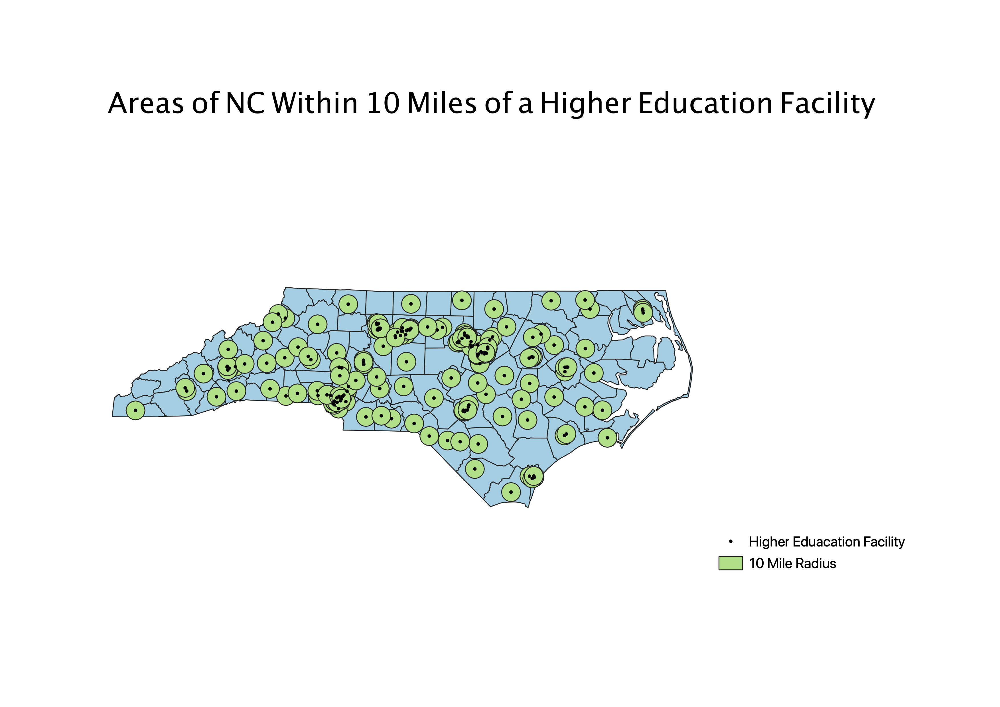

This map aims to answer the question: what areas of NC have accessible Higher Education? I created this map by layering a shapefile of all the Higher Education facilities with the NC County Map and using the instersection tool to display only the Higher Education points in NC. I then used the buffer tool to create a 10 miles radius around each point. I find this map interesting because it shows the accessibility of Higher Education in the state.
